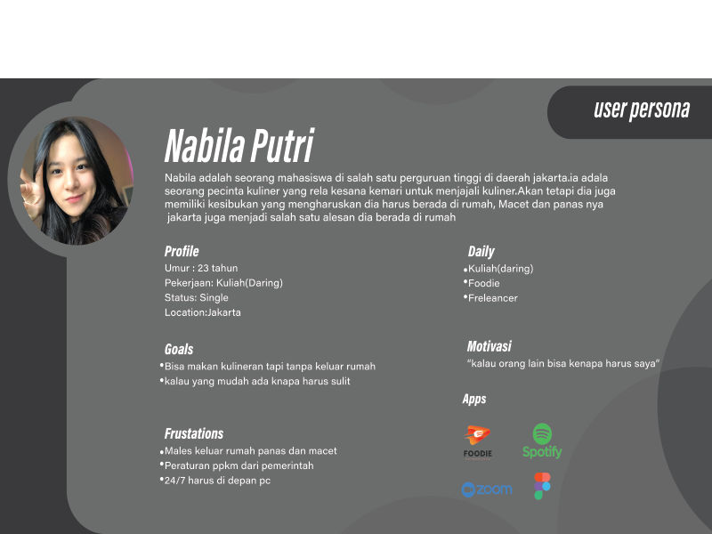
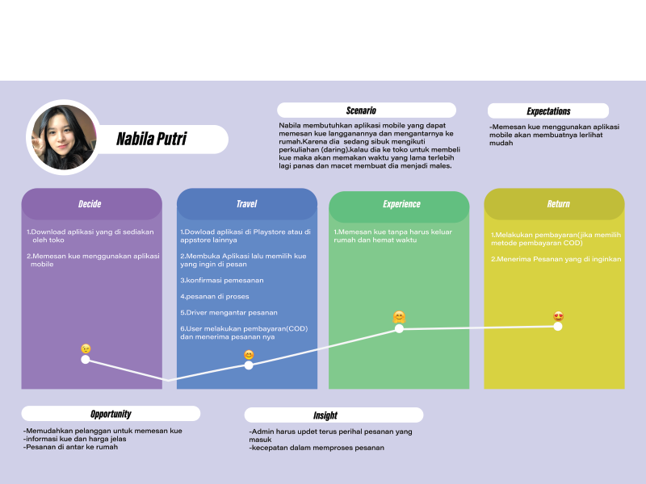
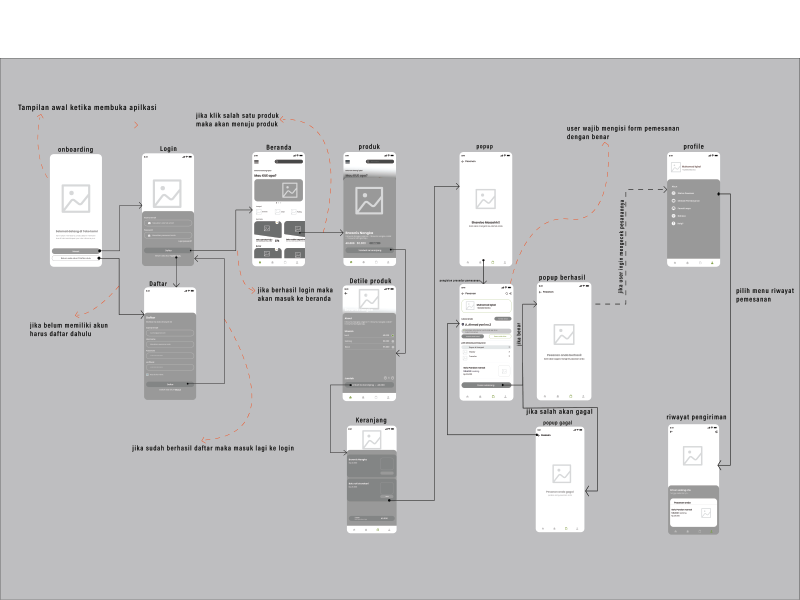
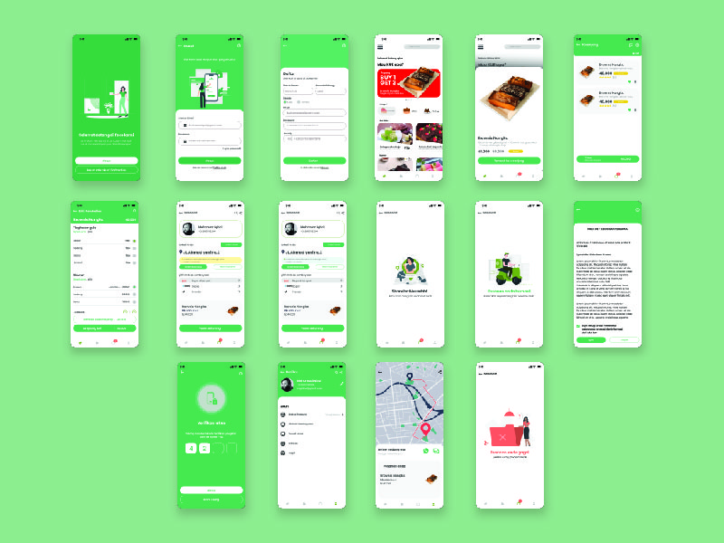
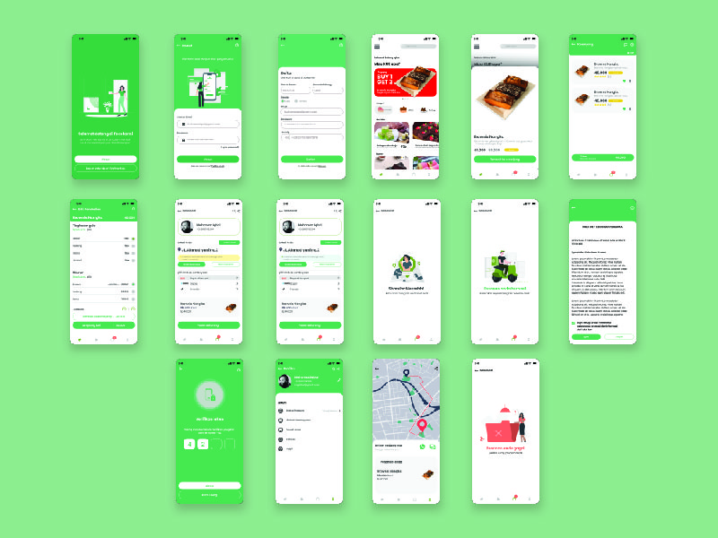

Sebuah Toko kue yang mulai memiliki banyak pelanggan yang berdatangan untuk membeli kue di tokonya akan tetapi banyak yang malas keluar rumah dan menginginkan menu delivery
Membuat sebuah mobile apps untuk memudahkan User/pelanggan untuk memesan kue di toko tersebut.User hanya tinggal membuka apps tersebut lalu memilih pesanan yang di inginkan dan nanti pesanan akan di antarkan oleh driver ke rumah anda .
Untuk user personanya adalah seorang pecinta kuliner yang sangat menyukai kue, dan dia menemukan sebuah toko kue yang disan menjual banyak kue kesukaannya dan akhirnya menjadi toko kue langganannya.Namun ada banyak tuntutan yang membuat dia malas untuk keluar rumah sedangkan dia ingin memakan kue di toko langganannya.Dia ingin memakan kue tapi tanpa harus pergi ke toko
Untuk user jorney map nya seperti gambar di atas, isinya adalah gambaran perjalanan atau step by step dimana si user/pengguna dalam menggunakan aplikasi. mulai dari decide sampai return.
untuk wireflow seperti gambar di atas, saya menggunkan wireflow jenis low fidelity yang di proses tampilan awalnya ketika membuka aplikasi ada splash screen sampai page proses pengiriman
 

berikut ini adalah hasil prototypenya, mungkin untuk lebih jelasnya bisa klik link Di sini